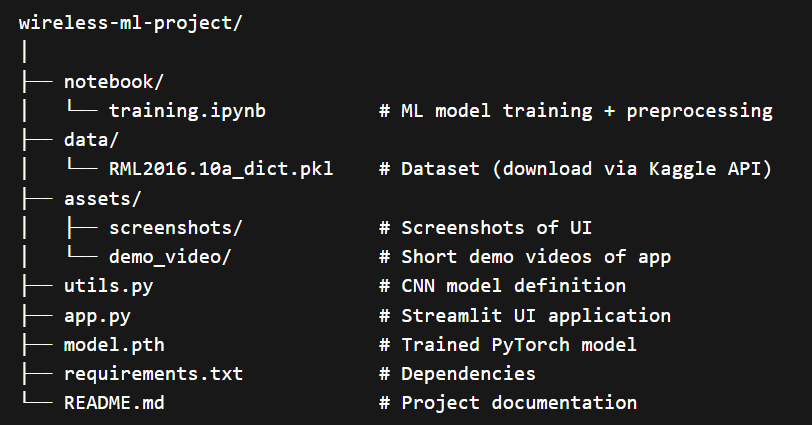

Modulation Classification
Predicts BPSK, QPSK, 8PSK, AM, FM, FSK, PAM, and QAM families with top-3 confidence ranking.
Deep Learning for Wireless Communication
A PyTorch and Streamlit system trained on RML2016.10a to analyze 2 x 128 wireless signal snapshots, surface top modulation probabilities, and predict signal-to-noise ratio in decibels.
live signal console
Signal Intelligence
Predicts BPSK, QPSK, 8PSK, AM, FM, FSK, PAM, and QAM families with top-3 confidence ranking.
Uses a shared CNN representation and a regression head to estimate signal quality in dB.
Plots in-phase and quadrature channels so each signal can be inspected before reading predictions.
Supports uploaded .npy signals and random generated samples for quick interactive testing.
Dataset
The project uses the RadioML 2016.10a dataset from Kaggle. The original pickle dictionary is keyed by modulation and SNR pairs, then flattened into arrays for PyTorch training.
Open dataset sourceInteractive Details
Quadrature Phase Shift Keying uses four phase states and is common in digital wireless links.

Model
The model learns shared features from I/Q channels, then branches into a classifier for modulation type and a regressor for SNR estimation.
Training Workflow
Fetch RML2016.10a through KaggleHub or the Kaggle dataset page.
Flatten dictionary keys into X, modulation labels, and SNR labels.
LabelEncoder maps 11 modulation names into class ids.
Adam optimizes CrossEntropy classification loss plus MSE regression loss.
Saved weights are loaded by Streamlit for interactive upload and prediction.
Contact
Aditya Gautam, pre-final CSE student specializing in AI. Reach out for project feedback, collaboration, or questions about the wireless ML pipeline.